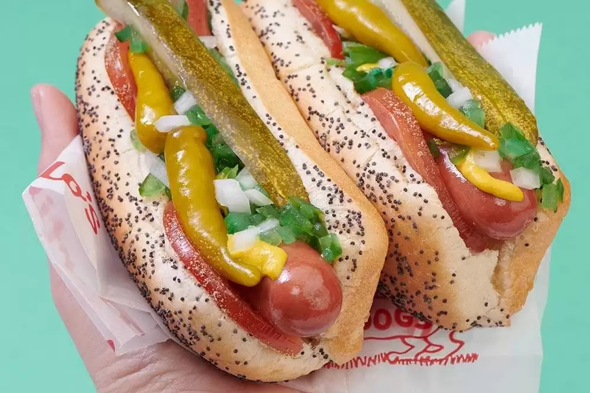

THE CHICAGO DOG

A Portillo’s Chicago-style hot dog is a natural casing beef hot dog served in a steamed poppy seed bun loaded with
mustard, relish, onions, tomatoes, kosher pickle spear, sport peppers and Portillo’s own seasoning salt. To prepare this
delicacy, first put on the supplied Portillo’s crew hat and follow these simple steps:
Ingredients!
- 1 steamed poppy seed bun
- 1 grilled or boiled all-beef hot dog
- Yellow mustard
- Freshly chopped onions
- Dill pickle spear
- Slices of tomato
- Neon green relish
- Sport peppers
Step By Step Directions
- Start with a steamed poppy seed bun.
- Add a grilled or boiled all-beef hot dog.
- Top the hot dog with yellow mustard.
- Sprinkle with freshly chopped onions.
- Add a dill pickle spear on one side.
- Place tomato slices on the other side.
- Add neon green relish to the top.
- Place sport peppers on top of the relish.
- Finish with a sprinkle of celery salt.
- Enjoy your delicious Chicago dog!